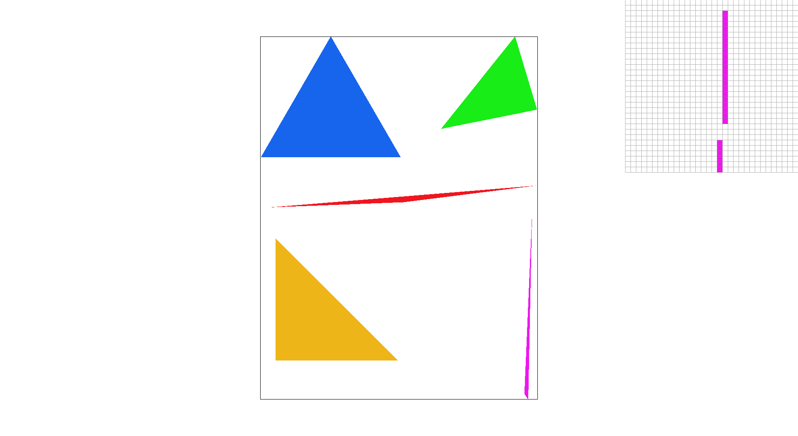
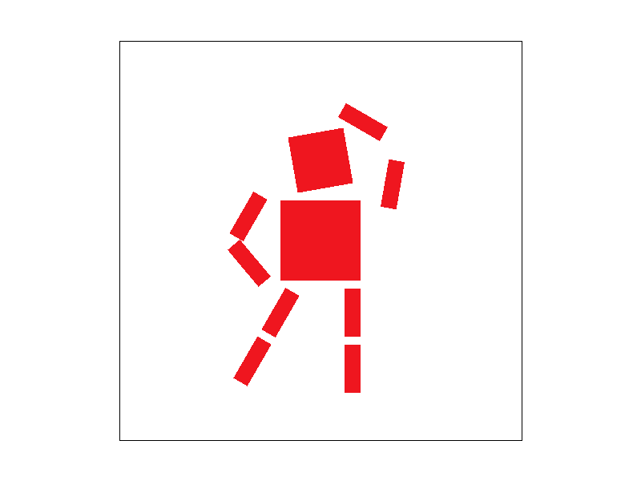
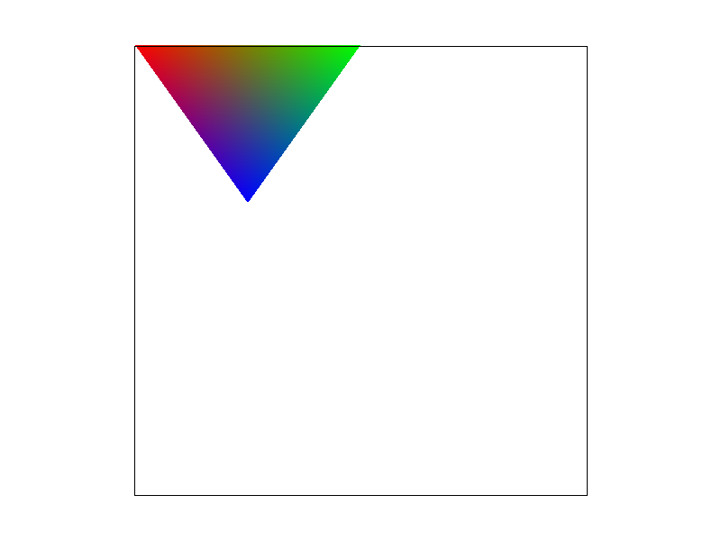
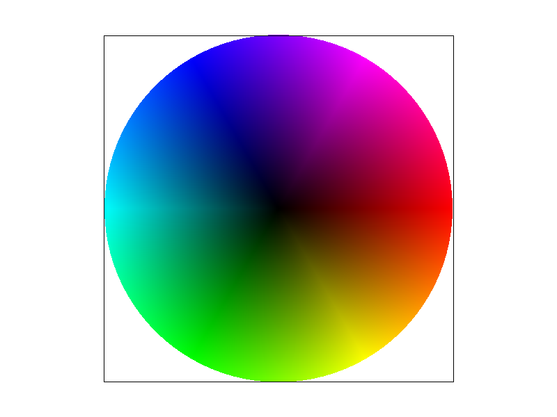
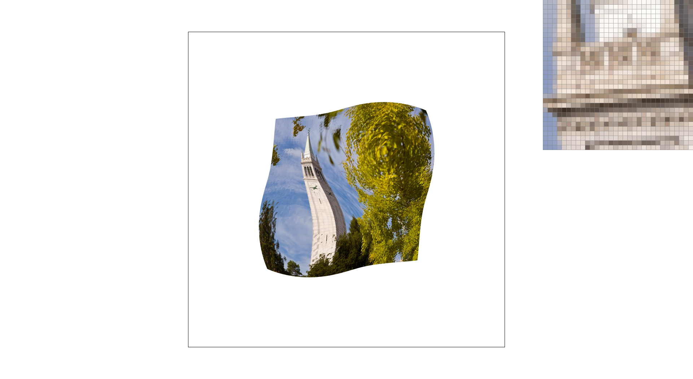
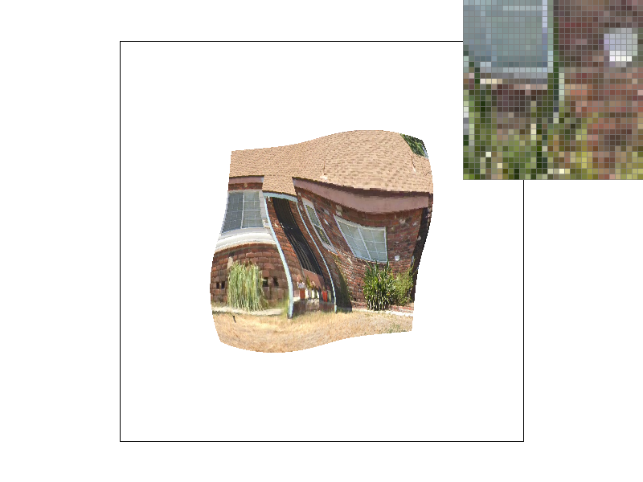

Overview
In this homework, a rasterizer was implemented. It is capable of rendering solid color triangle, interpolated color triangle, and textured triangle. Antialising methods implemented are supersampling, bilinear pixel sample, and linear level sampling.
Section I: Rasterization
Part 1: Rasterizing single-color triangles
Basic 4: Assorted single-color triangles. Observe that the purple triangle is disjointed. This is because of aliasing.
To rasterize a solid-color triangle, I simply sampled every pixel in the bounding box enclosing the triangle to see if they are in the triangle. To be more precise, given 3 vertices and a color, the process can be given as follows:
- Get the bounding box of triangle by finding topmost, leftmost, rightmost, and downmost coordinate from the 3 vertices.
- Rearrange the vertices to be counterclockwise, starting from the leftmost point. This can be done using the right hand rule.
- For each pixel within the bounding box, sample. If the pixel's center is in the triangle (bounded by three line inequalities), then color the pixel.
This algorithm is no worse than one that checks each sample within the bounding of the triangle because that is exactly what the algorithm do and each pixel is only visited once.
Part 2: Antialiasing triangles
|

|
|
|
The supersampling algorithm is an extension of the rasterization algorithm, which splits each pixel into #sample_rate subpixels, where #sample_rate is a square number. Increasing the granularity of the pixel allows us to check for triangle-collision with greater precision, and as such, reduce the jaggedness of the triangle (aliasing effect).
A simple implementation is used. Previously, we sampled pixel and display pixels are equivalent. For supersampling, we sampled #display_pixels * #sample_rate. There is a size difference, so we need to add a step between sampling and displaying to aggregate the subpixels. The aggregation function is simply averaging the colors.
Above, I show the result of applying supersampling to the purple triangle, which was previously disjointed. As the sampling rate increase, the triangle becomes smoother. Though, some part of it is now transparent instead of being a solid color. Because supersampling worked, it is most likely that in the disjointed triangle, some pixels overlapped with the triangle, but is center were not fully enclosed within the triangle, as such, it did not render before. Because supersampling checks subpixels. A significnat amount is enclosed and as such the pixels are shown.
Part 3: Transforms

|

|
I experimented with scaling, rotating, and translating svg shapes. Using a reference T-posing robot, I transformed the robot into a more dynamic pose. The robot is looking up to the right, and is holding its hand to cover the sun.
Section II: Sampling
Part 4: Barycentric coordinates
|

|

|
Barycentric coordinate is a coordinate system where each coordinate represents the coefficients of a linear sum of the vertices of a triangle. The coordinate will have all positive values if the point is enclosed within the triangle and the coordinate values sum to 1. To see this, observe the tricolor triangle, wherein each vertex is assigned a unique color. The color in any pixel in the triangle can be calculated as a linear sum of the vertices' color and their position. Observe that the vertex themselves are purely their color, but as we move away from any vertex, the color becomes blended between 2 to 3 vertex colors. The properies of the barycentric coordinates make it good for interpolation.
Part 5: "Pixel sampling" for texture mapping
|
|

|

|
|
Texture mapping assigns each vertex of a triangle a corresponding vertex on a texture map and maps the color over. Pixel sampling is the base function for texture mapping. It takes a coordinate in the triangle and return the corresponding color in the texture map. For any pixel in the triangle, we can interpolate the corresponding coordinate with barycentric coordinate. Then, by applying pixel sampling, we can assign each of these point a color from the texture map. And as such, mapped the texture to the triangle.
I used two sampling methods: nearest and bilinear. The interpolated coordinate in the texture is a float. However, pixels are only considered as integer. In this case, how do we know which pixels to sample? The nearest pixel sampling simply finds the nearest pixel that encloses the coordinate and returning its color. On the other hand, bilinear pixel sampling takes the 4 closest pixels and returns color based on how close each of those are to the actual coordinate.
For comparison, I tested nearest neighbor pixel sampling and bilinear pixel sampling on a distored image of the Campanile. There is greater antialiasing for the bilinear pixel sampling. This makes sense because bilinear averages neighboring pixels together. An implication of this is that it will try to blur pixels together even if there is high contrast between adjacent pixels. For example, an alternaing pattern of black and white pixels will result in an averaged out gray in bilinear, but remains an alternaing pattern for nearest neighbor sampling. So, while bilinear is better for antialiasing, it does cost loss of clarity.
Part 6: "Level sampling" with mipmaps for texture mapping
|

|
|
|
|
|
Texture size matters. Big texture can create aliasing effect if they need to be compressed and small texture will be blurred if they need to be stretched out. As such, it is common to pre-generate minimaps (smaller versions of a texture). Level sampling is choosing which minimap size to sample from. For level 0 sampling, we simply sample from the original full size texture file. Going one step down the rabbit hole, we can calculate an optimal minimap level based on the size of the of the triangle in the texture plane. The calculation will generates a float value. In nearest level sampling, we simply round it to the closest integer and proceed as before. In linear level sampling, we sample from the two closest minimap levels and lerp their result based on the closeness to the float level.
Tests were carried out to compare level sampling with pixel sampling. It seems that level sampling has a more pronounced impact. Because a minimap is used, the image is blurred significantly. Alone, the pixel sampling does not have such effect, but when used together with level sampling, the effect is extremely pronounced. Using linear level sampling with bilinear pixel sampling is called trilinear texture filtering.
Comparing the impacts of supersampling, pixel sampling, and level sampling, supersampling is probably the most well-rounded. It has a high memory usage cost if implemented unoptimized (like this implementation) because memory usage scales linearly with sample rate. As such, execution speed also decreases linearly. Its antialiasing power is very good because it has greater precision from using subpixels.
Pixel sampling is probably the cheapest to implement. It has the least memory usage because it only compares 4 pixels for bilinear pixel sampling. As such, the speed loss is also the least. However, its antialiasing power is not great because it only consider 4 pixels.
The level sampling technique is probably the most efficient, though it require more resources. It require arguably the most memory usage because it must pre-generate the minimaps. Though, its speed loss is negligible because the minimaps are pregenerated. The antialiasing power is good because it basically blur the image by using a lower resolution image. Though, at time, this effect may be a bit much.